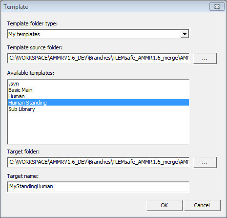

Lesson 2: Controlling the Posture¶
The Standing Model’s posture is defined by the angles at the anatomical joints.
These specifications have been collected in one of the model files, “Mannequin.any”. Scroll
down to the line which says #include "Model\Mannequin.any".
Mannequin file structure¶
...
// Define desired posture or movement of the model
#include "Model\Mannequin.any"
...
This line means that your model will include the “Mannequin.any” file located in the Model folder, within the main file.
Double-clicking the file name in the editor window after loading your model opens the mannequin file in a new tab. Then you see the following structure. (In the interest of legibility we have removed many of the lines):
// Default mannequin position values
HumanModel.Mannequin = {
Posture = {
Right = {
};
Left = {
};
};
PostureVel= {
Right = {
};
Left = {
};
};
};
The section between each pair of braces creates a Folder, with all variables defined within forming the folder contents.
Once the loading process is complete, you can see this folder structure being replicated in “Model tree” on the left of your screen. All contents of this file can be seen by expanding the “Mannequin” folder icon in the tree.

There are sub-folders for postural joint angles (in degrees) and angular velocities (in degrees/second), for the right and left halves of the body.
Changing any of the joint angles and reloading the model, will change the model’s posture at load time. To start with, ensure that the contents of the “Right” and “Left” sub-folders are as follows.
...
AnyFolder Right = {
//Arm
AnyVar SternoClavicularProtraction=-23; //This value is not used for initial position
AnyVar SternoClavicularElevation=11.5; //This value is not used for initial position
AnyVar SternoClavicularAxialRotation=-20; //This value is not used for initial position
AnyVar GlenohumeralFlexion =-0;
AnyVar GlenohumeralAbduction = 10;
AnyVar GlenohumeralExternalRotation = 0;
AnyVar ElbowFlexion = 0.01;
AnyVar ElbowPronation = -20.0;
AnyVar WristFlexion =0;
AnyVar WristAbduction =0;
//Leg
AnyVar HipFlexion = 0.0;
AnyVar HipAbduction = 5.0;
AnyVar HipExternalRotation = 0.0;
AnyVar KneeFlexion = 0.0;
AnyVar AnklePlantarFlexion =0.0;
AnyVar SubTalarEversion =0.0;
...
If you scroll down, you’ll see that the contents of “Left” folder are set to be equal to those from the “Right” folder, in order to create a symmetric posture.
This is an important feature of the AnyScript language. Instead of numbers, you can create references to other variables or write mathematical expressions wherever necessary.
To create a non-symmetric posture, you would have to replace some of the expressions in the “Left” folder with numbers of your choice.
Scrolling further below, you will find the “PosturVel folder”. This is organized exactly like Posture, but the numbers here specify joint angular velocities in degrees per second. For now, please leave all the values in this folder as zero.
Running a simulation analysis¶
Simulation based analyses in AnyBody are termed “Studies”.
Step 1: Click on the operations drop-down menu at the top (see figure). Select “Main.RunApplication”
“RunApplication” is a readymade package of some pre-processing steps and the “InverseDynamics” analysis. Other drop-down operations include:
- Kinematics: Runs Kinematic analysis
- InverseDynamics: Runs Inverse dynamic analysis
- InitialConditions: Runs only the first time step of Kinematics. Useful for testing and debugging.
- Replay: Replays the last operation that was run.

Step 2: Click the “Run Operation” button on the Execute toolbar. This toolbar is next to the drop-down menu, and contains three buttons:

- Run operation: Starts or pauses the chosen operation. Shortcut F5.
- Step operation: Advances to next step of operation, typically a time step. Shortcut F6.
- Stop operation: Sets the operation back to its initial position. You must reset before you start a new analysis that was previously aborted. Shortcut F4
You will see the model move slightly into position and you are finally awarded the following message:
1.0) Inverse dynamic analysis…
1.10) …Inverse dynamic analysis completed
You have just completed your first analysis with an AnyBody model. In the next lesson, we will examine the effects of posture on the results : Lesson 3: Reviewing analysis results.
 Please report it here...
Please report it here...